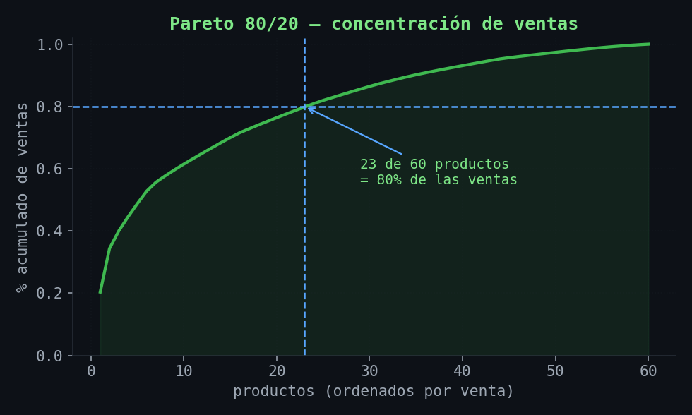
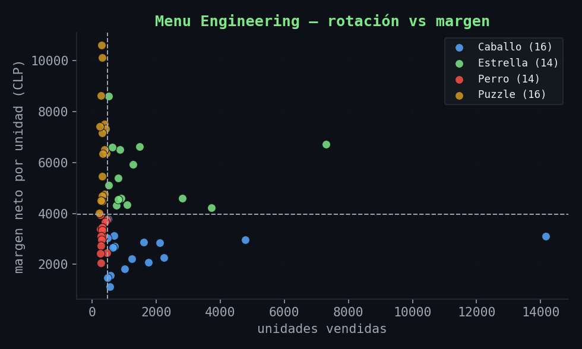
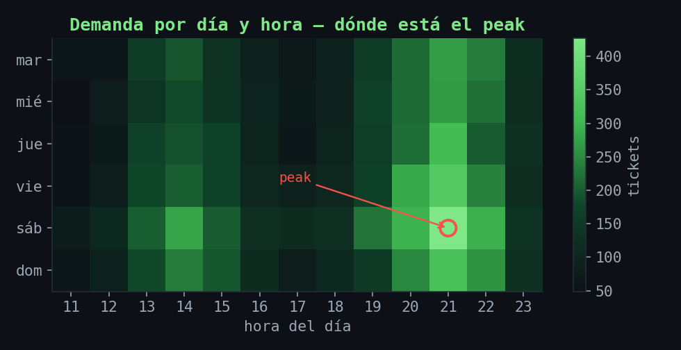
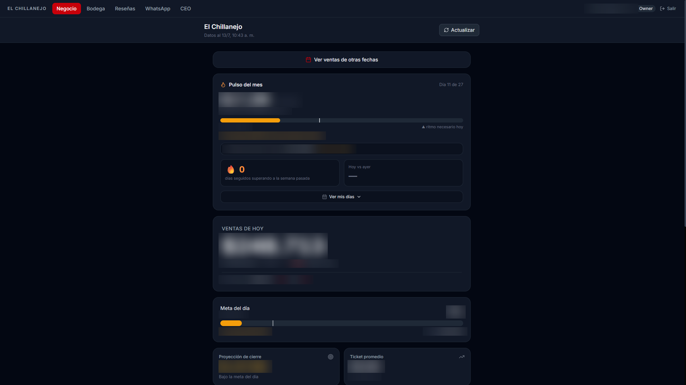
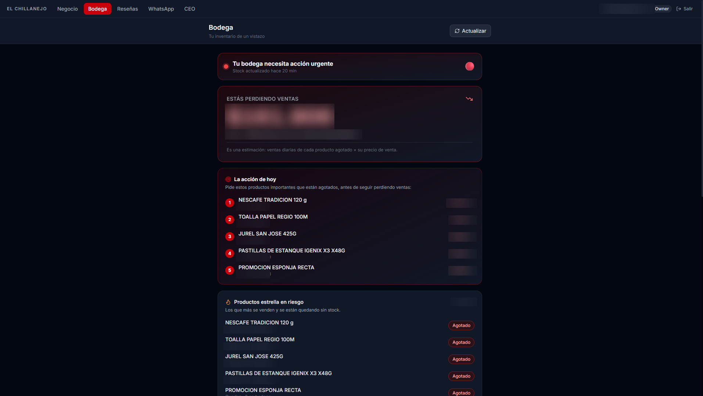
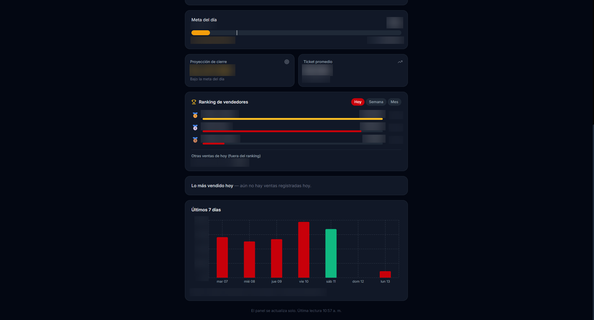
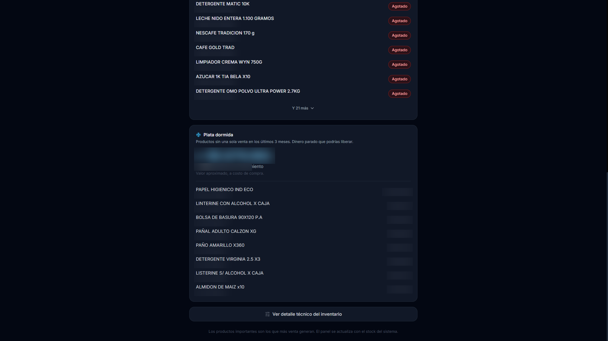

De la prevención de riesgos y la logística a la ciencia de datos: llegué a los datos por el camino largo, y eso moldeó mi forma de pensar. Construyo soluciones de extremo a extremo, desde el ERP hasta dashboards y agentes de IA que las empresas usan a diario.
Primero hago la pregunta correcta: ¿esto necesita machine learning, o basta con un buen pipeline y una consulta SQL bien pensada? Ese criterio guía todo lo que construyo.
Panel con asistente de IA y agentes: ventas, food cost, ingeniería de menú, mermas, alertas y más. Muestra interactiva en vivo.
▶ ver demo en vivo →El mismo producto de agentes, adaptado a otro restaurante: ventas, ingeniería de menú, mermas, cuadre de caja, margen real en delivery y asistente conversacional. Demo interactiva en vivo.
▶ ver demo en vivo →Una sola plataforma en producción: ERP (Relbase) → Supabase/PostgreSQL con sync automático horario, 3 dashboards por rol, tienda online con Mercado Pago, bot de IA en los canales de Meta (WhatsApp, Instagram, Facebook) y motor de recomendación por canastas. +132.000 ventas procesadas.
Dataset tipo POS, KPIs financieros y operativos, Pareto 80/20, Menu Engineering y forecasting de demanda con Prophet.
● Python · pandas · ProphetPortal completo en uso diario por el equipo: inventario por escaneo de código de barras, transferencias entre bodegas (con generación de planilla para el ERP) y recepciones de mercadería.
Indicadores y hallazgos de mi proyecto de optimización de demanda (dataset tipo POS, sintético y reproducible: 60 productos, 120 días). Diseño, calculo y reporto los KPIs — y después traduzco cada hallazgo en una acción concreta de negocio.







Construyo apalancado en IA como multiplicador — pero detrás de cada proyecto siempre hay una persona. Criterio humano en cada decisión, y siempre disponible para hablar directamente contigo. Creo que, con los años, el verdadero valor será la atención humana.
En curso · término octubre 2026
Un asistente de IA que responde sobre mi experiencia. Pruébalo:
Abierto a oportunidades como Data Scientist y a proyectos de datos/IA. Conversemos: